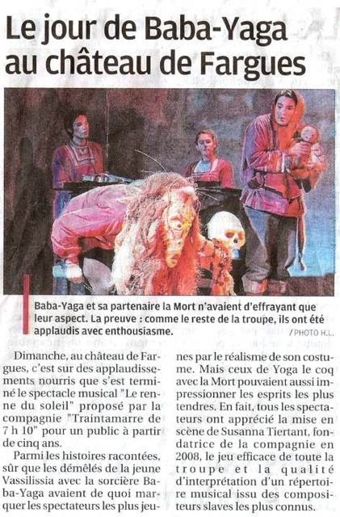

CIE TRAINTAMARRE DE 7H10
Contes de l’isba est un spectacle familial à découvrir à partir de 6 ans. Il réunit trois contes de Russie et Roumanie, associés à des musiques pour clarinette, violon et piano puisant dans les répertoires de ces mêmes cultures (Bartók, Prokofiev, Stravinski, Moussorgski, Rimsky-Korsakov et Khatchaturian).
L’influence de la culture populaire est essentielle aussi bien dans les musiques de ces compositeurs que dans les contes eux-mêmes, de tradition orale. Par là-même, ces récits sont porteurs de valeurs intemporelles : «Vassilissa et la Baba-Yaga» dépeint une héroïne courageuse et confiante en sa bonne étoile dans les moments les plus hostiles ; le goût de la vie du vieillard farceur Yoga-le-coq l’amène à défier la mort ; enfin, «Radu et les sept princesses» croise le thème de l’amour avec la passion de la musique et de la danse.
Les enfants prendront plaisir à rencontrer la poupée magique de Vassilissa, à rire des pitreries de Yoga, à s’émerveiller face au palais ensorcelé des sept princesses, à trembler devant la Baba-Yaga… Quant aux adultes, ils pourront découvrir ou redécouvrir un répertoire musical à la fois exigeant et accessible, retrouver des contes canoniques mais aussi d’autres très peu connus. Ces univers de la forêt, du grand Nord et de la magie des sages ont donc vocation à séduire petits et grands.
La presse en a parlé...
LA PROVENCE - THÉÂTRE DE LA BOURSE DU TRAVAIL CGT - Juillet 2012
La compagnie traintamarre propose un spectacle de contes aussi bien pour les petits que pour les grands. Ils sont cinq sur scène, deux comédiens "le conteur et la princesse", un clarinettiste "l'ivrogne", un violoniste "la poupée" et une pianiste "la fée", à nous transporter par leurs interprétations dans l'Europe de l'Est folklorique et magique.
Pour tout décor, des panneaux amovibles figurent une isba qui évolue au fil des contes illustrés par un répertoire musical russe et hongrois allant de Stravinski et Bartók à Prokofiev. Des musiques exigeantes jouées par des musiciens de talent qui accompagnent et ponctuent en parfaite harmonie le dialogue des conteurs.
Toute la mise en scène des décors et des costumes nous transporte dans ce voyage à la rencontre des contes slaves, contes qui ne sont finalement pas si éloignés de nos archétypes culturels : vous apprendrez à jouer des tours à la mort, à échapper aux griffes d'une ogresse ou encore à épouser la fille maudite d'un empereur. On ne sait plus lesquels de la musique ou des contes il faut apprécier le plus.
Johan Barthélemy
LA PROVENCE - CHÂTEAU DE FARGUES (Le Pontet) - 18 Décembre 2012

PARIS MÔMES - Novembre 2013
Ils sont venus nous voir !
PROPOS RECUEILLIS SUR BILLETREDUC - THÉO THÉÂTRE - entre mai et juin 2012
- «Poétique, romantique, exotique, original, drôle et surtout d'un très haut niveau technique, surtout pour les musiciens [...] Tout le monde y trouve son compte et personne ne s'ennuie. Nous avons tous adoré. »
- «Petits contes bien enchaînés, mêlant peur, amour, joie, surprise et dynamisme tout en musique. [...] On passe un agréable moment.»
- «C'est un spectacle énergique, drôle, avec des comédiens-musiciens talentueux. Même les adultes se font avoir par la puissance des histoires et leurs effets de surprise.»
- «Très poétique, de bons acteurs et d'excellents musiciens. C'est très beau. Ma petite fille de 4 ans a adoré...»
- «Nous avons passé un très bon moment [...] les plus jeunes en sortent enchantés. Très bien narré et les musiciens sur cette scène rendent ce spectacle vivant tout en permettant de découvrir la musique de l'Europe de l'est. En résumé, un spectacle de qualité pour parents et enfants».
LE BLOG DE DOMINIQUE RENIER - THÉO THÉÂTRE - 11 Juin 2012
[...] Contes et musiques d’Europe de l’Est magnifiquement racontés, chantés et dansés par cinq comédiens/musiciens excellents, drôlissimes, dynamiques et sympathiques que tous les enfants, de 5 à 95 ans (et plus !) ne doivent à mon avis pas manquer. [...]
MUSIC LOVE SUPRÊME - THÉÂTRE DE LA BOURSE DU TRAVAIL CGT - 4 Juillet 2012
Chers amis, voici un spectacle que je vous recommande vivement...
Ces contes musicaux originaires de Russie et Roumanie raviront les petits et les grands par la qualité de leurs merveilleux interprètes... Comédiens et musiciens d'une qualité rare, leurs prestations scéniques et musicales vous charmeront et vous serez éblouis par la virtuosité de Franck RUSSO (clarinette et clarinette-basse), Khoa-Vu NGUYEN (Violon), Susanna TIERTANT (piano), tous trois du reste excellents comédiens, entourant leurs deux complices Claire JOUET-PASTRE et Jean BOISSINOT acteurs principaux de cette petite féérie... [...]
Richard Scotto